Perfil profesional

Ensor Sanchez
Sistemas IT | Operaciones Digitales | Automatizacion
Ingeniero en Sistemas especializado en operaciones digitales y transformacion tecnologica. Integro para optimizar equipos comerciales e inmobiliarios con resultados medibles.
- Disponible para proyectos
- Enfoque IT + PropTech
Experiencia Profesional
-
APYCA Developers
Operaciones IT y PropTech
2022 - Actualidad | Punta Cana
Liderazgo de ecosistema tecnologico: web, CRM, automatizacion, infraestructura y analitica. Mejora operativa documentada de hasta un 70% en procesos internos.
-

Grupo Snap Publicidad
Tecnología y Operaciones Digitales
2021 - 2024 | Punta Cana
Implementacion de sistemas de automatizacion, CRM y gestion digital para campanas y operaciones comerciales. Diseno de flujos de captacion de leads y herramientas digitales que optimizaron procesos internos y aumentaron la eficiencia operativa.
-
Downtown Punta Cana
Administrador de Sistemas y Operaciones IT
2017 - 2021 | Punta Cana
Administracion de infraestructura tecnológica, servidores, redes y soporte IT en entorno turístico e inmobiliario. Gestion de plataformas web, soporte tecnico avanzado, administracion de sistemas y optimizacion de operaciones digitales.
-
I24 web
Soporte y desarrollador WordPress · Ads
Venezuela
Soporte técnico y desarrollo en WordPress, mantenimiento de sitios y entornos web, junto con gestión y optimización de campañas de publicidad digital.
-
PDVSA
Soporte IT
2012 - 2014 | Venezuela
Proporcioné soporte técnico esencial y mantenimiento de sistemas en un entorno corporativo y web. Mis responsabilidades incluyeron la instalación, configuración y resolución eficiente de incidencias.
Formacion y Especializacion
-
Ingeniería en Sistemas — graduado en 2013
Base técnica en sistemas, servidores y desarrollo web
Formación principal · Venezuela
Especializacion aplicada en infraestructura IT, automatizacion, analitica y transformacion digital para operaciones de negocio.
-

CCubik Venezuela
Cofundador · Instructor y desarrollador
2013 · Academia y empresa de desarrollo
Cofundé en 2013 CCubik, academia y empresa de desarrollo. Formación y participación activa en comunidades tecnológicas (Ubuntu, Mozilla, Fedora) orientadas a sistemas y desarrollo web.
-

Coursera
Formación y especialización en línea
Programas certificados de Google
Programas certificados por Google en análisis de datos y visualización, SQL, herramientas de productividad en la nube, fundamentos de cloud y competencias digitales aplicadas a IT y a la mejora de procesos.
-
Platzi
Formación en tecnología y negocios digitales
Certificaciones y rutas de aprendizaje
Realice Formaciones en desarrollo web, DevOps y habilidades digitales, con ejercicios guiados, comunidad y enfoque en lo que se usa en equipos de producto.
-

EDteam
Desarrollo y tecnología en español
Cursos prácticos y proyectos guiados
Me forme en desarrollo web, DevOps y herramientas digitales, con ejercicios guiados, comunidad y enfoque en lo que se usa en equipos de producto.
-
Soy IT Pro (Jgaitpro)
Infraestructura Microsoft y entornos empresariales
Certificaciones técnicas y laboratorios
Formacion en Microsoft 365, Azure (incl. App Services), Docker y contenedores, Hyper-V, Windows Server, PowerShell, administración de endpoints y entornos empresariales.
-
Alexertech
Desarrollo web y ciberseguridad
Módulos fundamentales y avanzados
Fundamentos y nivel avanzado en HTML, CSS, JavaScript y PHP; seguridad informática (módulos esencial, defensivo y ofensivo); automatización y otros cursos orientados a desarrollo web.
Activismo de software libre
Galería de encuentros en los que participé con comunidades de software libre: Ubuntu, Fedora, Mozilla, instalaciones, FLISOL y jornadas de difusión en universidades y espacios ciudadanos. Además he sido profesor y he impartido cursos en aula y en talleres; varias de estas fotos corresponden a esos entornos docentes, no solo a stands o festivales abiertos. Objetivo común: acercar Linux y herramientas abiertas a más personas.
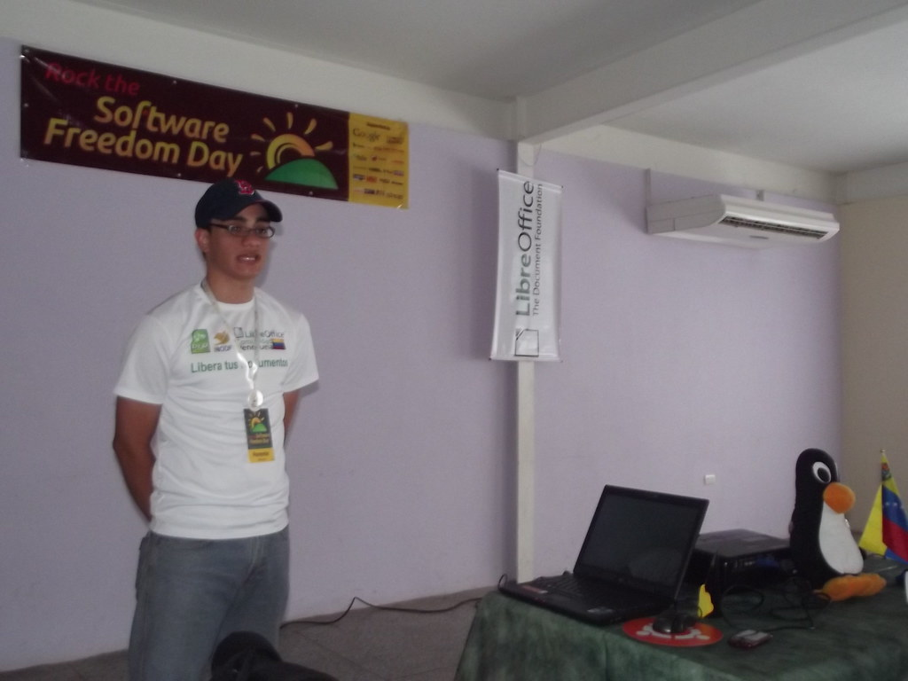
Software Freedom Day
Jornada global de difusión del software libre: mesa de instalación y acompañamiento a nuevos usuarios con Ubuntu Venezuela y LibreOffice durante el encuentro.
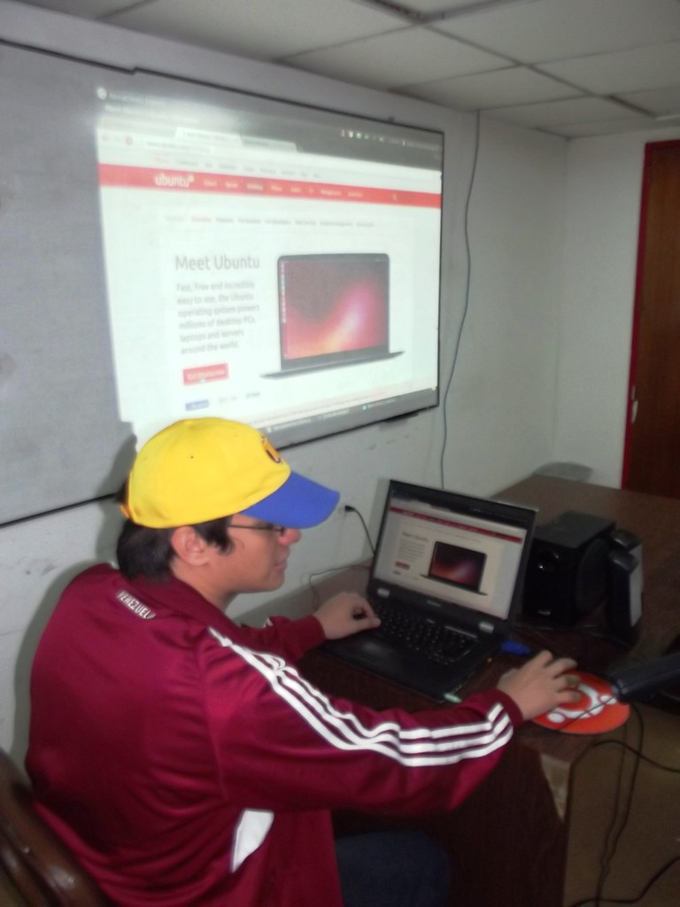
FLISOL
Festival Latinoamericano de Instalación de Software Libre: difusión y talleres abiertos al público.
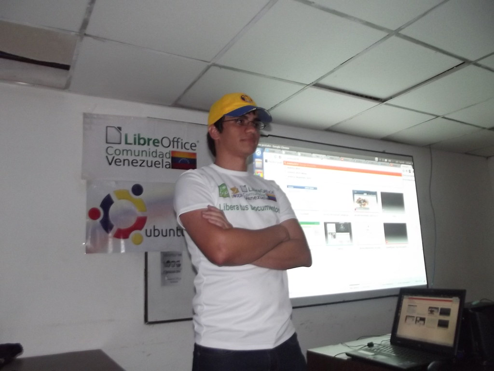
Fedora
Participación junto a la comunidad Linux y cultura de contribución upstream.
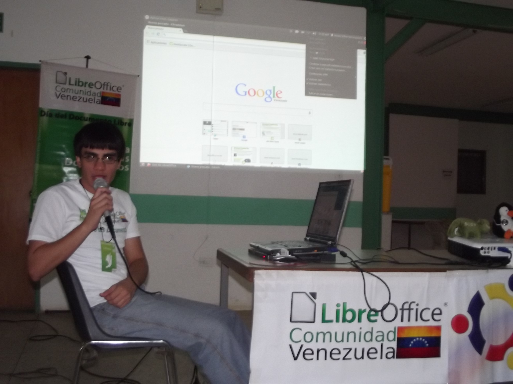
LibreOffice Comunidad Venezuela
Ponencia en encuentro regional con LibreOffice Comunidad Venezuela: suite ofimática libre, difusión del Día del Documento Libre y voluntariado alrededor del software libre.
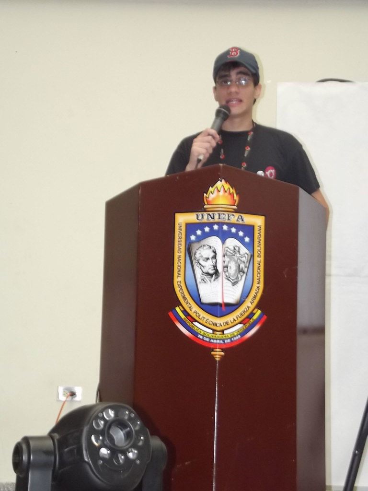
Taller práctico
Demostraciones en vivo en cursos y jornadas: escritorio, terminal y primeros pasos con Ubuntu.

Ponencia Ubuntu Venezuela
Charla ante estudiantes sobre Ubuntu y software libre, representando a la comunidad Ubuntu-ve: filosofía del proyecto, uso cotidiano de Linux y por qué importa la libertad del software en educación y en el trabajo.
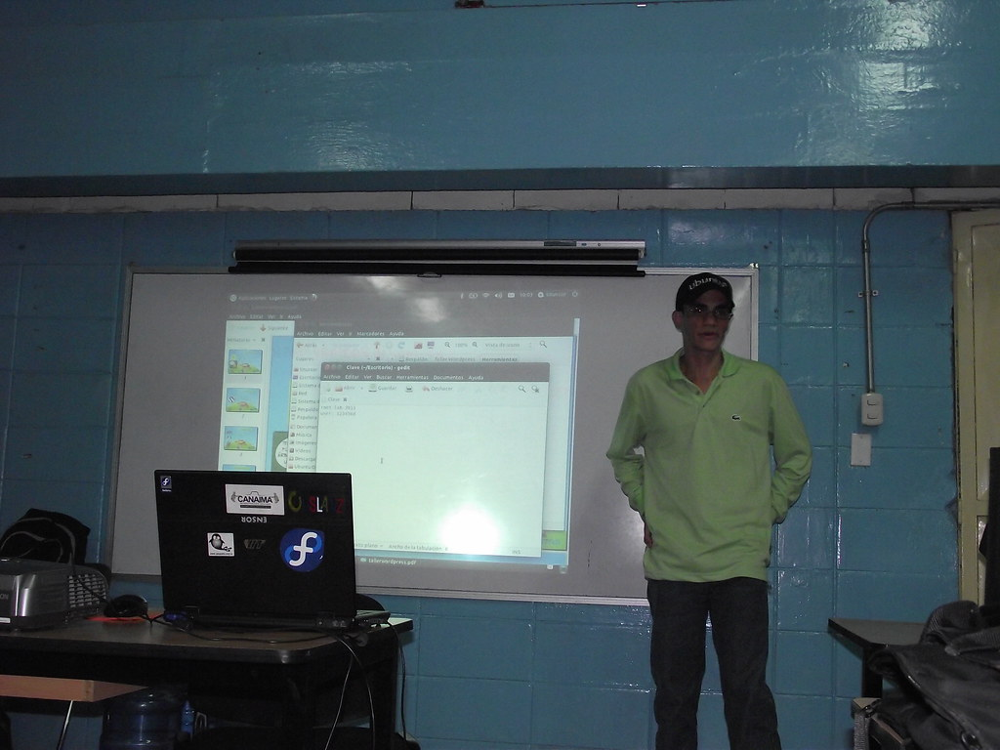
Educación y SL
Docencia y charlas en aula para acercar herramientas libres al ámbito académico y a estudiantes.
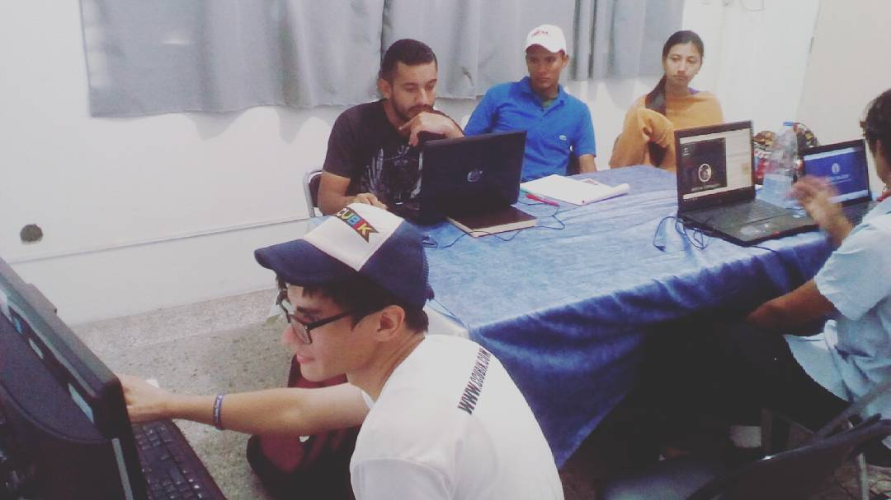
Stand y voluntariado
Material divulgativo, conversaciones con visitantes y apoyo entre voluntarios.
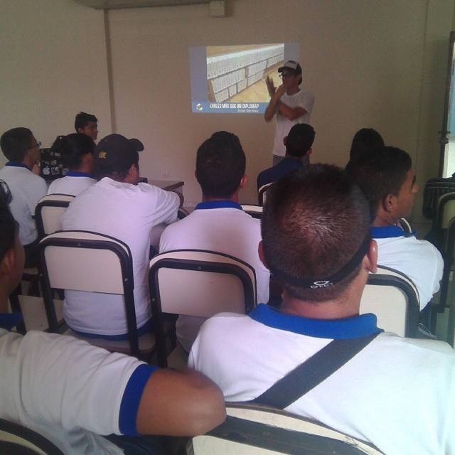
Ubuntu Loco
Encuentro local de usuarios: compartir experiencias y fortalecer la comunidad.
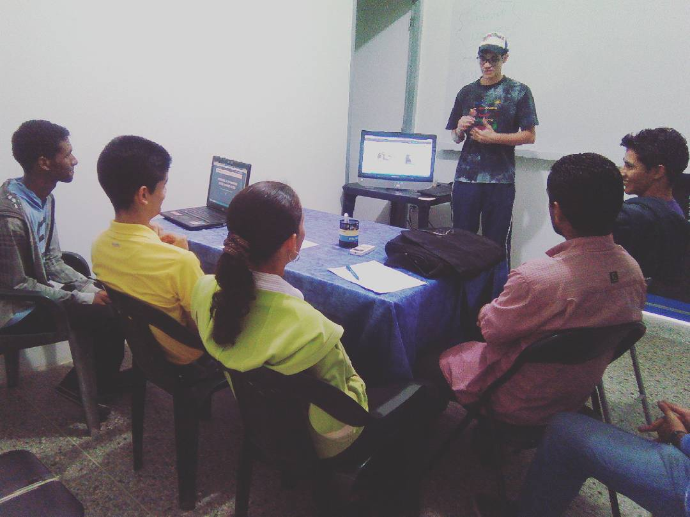
Sesión técnica
Temas de administración, terminal y buenas prácticas en entornos Linux.
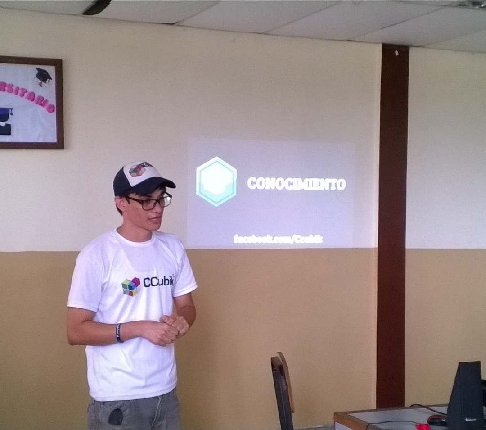
Jornada regional
Charlas y trabajo en red entre asistentes y proyectos de software libre.
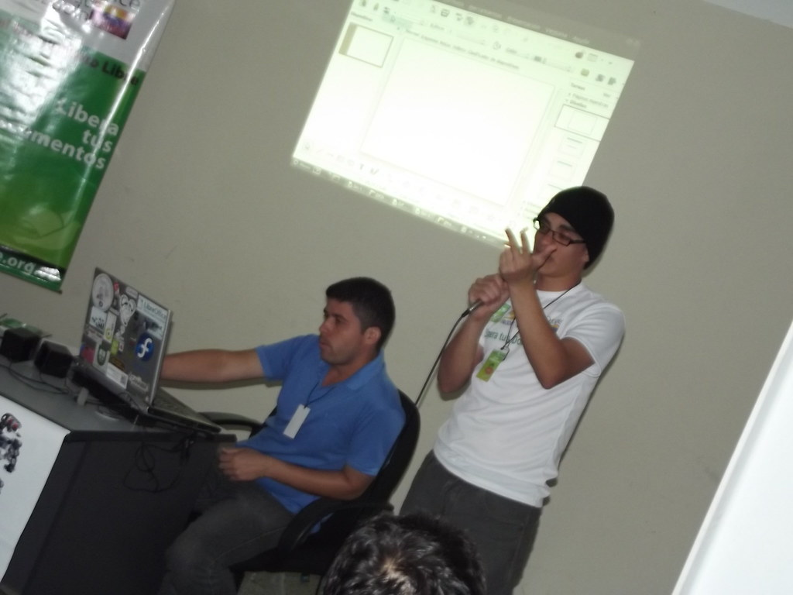
Entre proyectos
Intercambio entre comunidades y proyectos abiertos durante el evento.
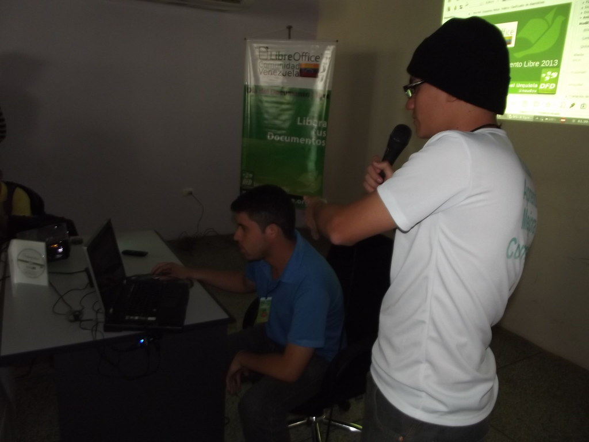
Comunidad
Momento grupal: voluntarios y asistentes tras una jornada de trabajo y aprendizaje.